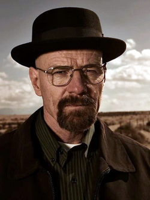

Walter is a skilled chemist who co-founded a technology firm before he accepted a buy-out from his partners. While his partners became wealthy, Walter became a high school chemistry teacher in Albuquerque, New Mexico, barely making ends meet with his family: his wife Skyler (Anna Gunn) and their son Walter Jr. (RJ Mitte). At the start of the series, the day after his 50th birthday, he is diagnosed with Stage III lung cancer. After this discovery, Walter decides to manufacture and sell methamphetamine with his former student Jesse Pinkman (Aaron Paul), to ensure his family's financial security after his death. Due to his expertise, Walter's "blue meth" is purer than any other on the market, and he is pulled deeper into the illicit drug trade.